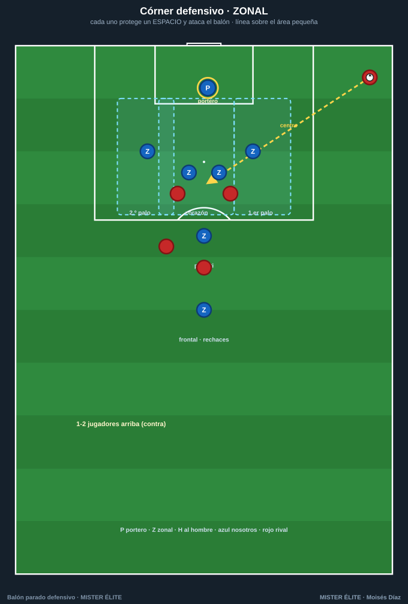
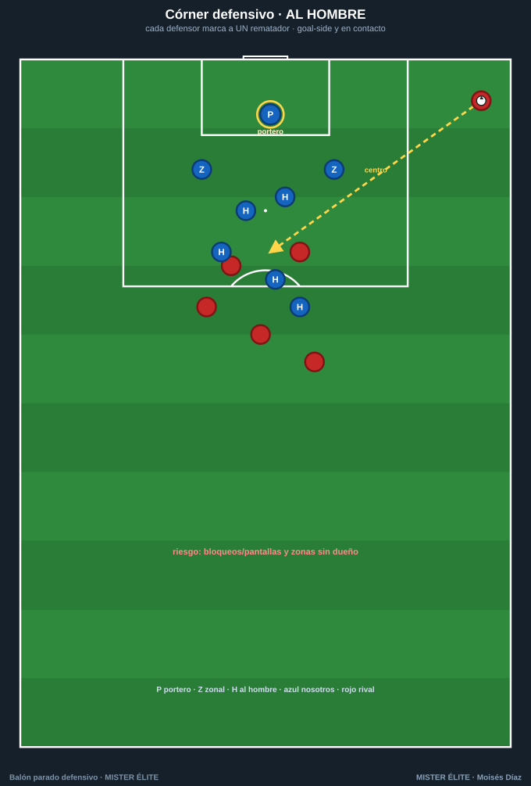
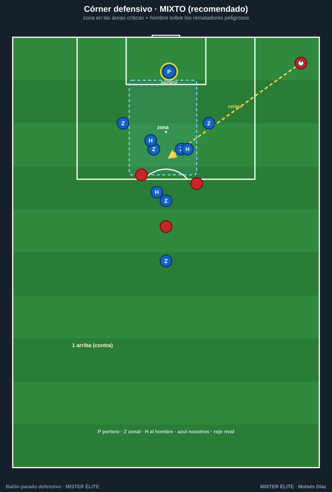
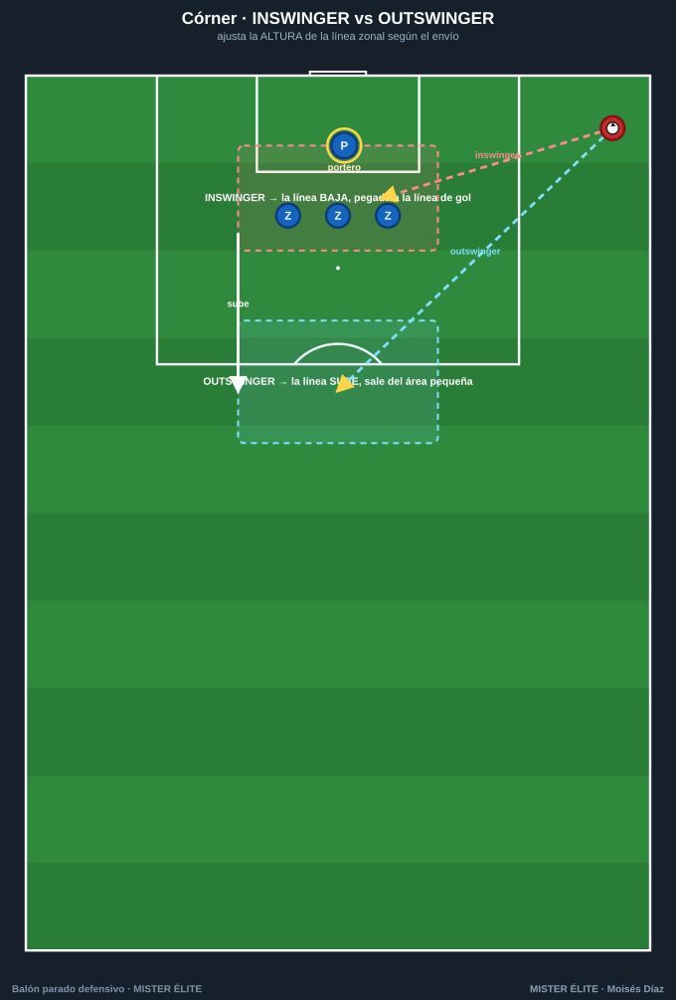
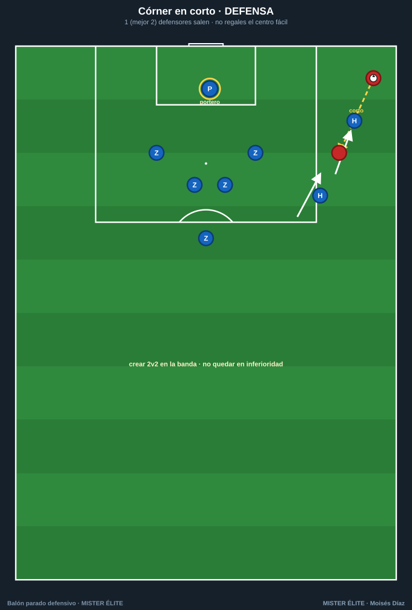
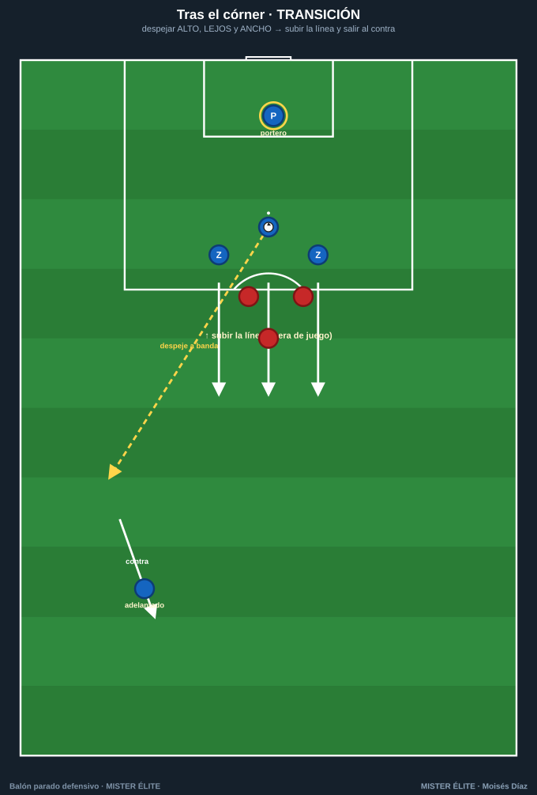

Defender el córner
Tres formas de organizarlo (zonal, al hombre, mixto) y cómo defender las variantes del rival. Recomendación del curso: mixto con dominancia zonal.
Córner ZONAL

- Idea: cada uno protege un espacio y ataca todo lo que entra en él, mirando el balón desde el saque.
- Estructura: línea de zonales sobre el área pequeña (1.er palo · corazón × 2 · 2.º palo · penalti) + 1 en el frontal para rechaces + portero.
- Reglas de oro: espaciado sin huecos · escalonar (el central algo más profundo) · ante inswinger baja, ante outswinger sube.
- Coaching: atacar el balón, no a los rivales; ningún hueco aprovechable entre dos zonas.
Córner AL HOMBRE

- Idea: cada defensor marca a un rematador y gana el balón antes que él.
- Estructura: emparejamientos por peligro/altura + jugadores en los palos para achicar la portería.
- Reglas de oro: goal-side y en contacto · ante una pantalla, comunica y cambia de marca (no choques).
- Riesgo: bloqueos/pantallas y zonas sin dueño. Por eso casi nadie lo usa puro.
Córner MIXTO (recomendado) ⭐

- Idea: zona en las áreas críticas + hombre sobre los 3 rematadores más peligrosos. Lo más sólido (Mundial 2022: solo 2,2 % de córners encajados).
- Estructura tipo: 4-6 zonales (palos + corazón + penalti + frontal) · 3 al hombre · 1 arriba para el contra.
- Coaching: tus mejores cabeceadores en zona en el área pequeña; los "bloqueadores" pegados a sus rematadores para que ni reciban.
Defender las variantes del rival
Inswinger vs outswinger (altura de la línea)

- Inswinger (cerrado, entra a portería): la línea zonal BAJA y se pega a la línea de gol; portero prudente; blindar el primer palo y la peinada. Es el más peligroso.
- Outswinger (abierto, se aleja): la línea SUBE y sale del área pequeña; cubrir los cut-backs; la línea más alta bloquea las carreras.
Córner en corto

- 1 (mejor 2) defensores salen ~10 m hacia el lanzador para impedir el centro fácil al primer palo.
- Crear 2v2 en la banda, no quedar en inferioridad. No regales el córner en corto ignorándolo.
Transición tras despejar

- Despeja ALTO, LEJOS y ANCHO, idealmente hacia tu jugador adelantado.
- Sube la línea en bloque (deja en fuera de juego a los rematadores) y sal al contra: el rival ha dejado espacios enormes.
Checklist del córner: sistema elegido (mixto) · primer palo cubierto · 2 mejores cabeceadores en el corazón · 3 hombre sobre los peligrosos · 1 en el frontal (rechaces) · 1 arriba (contra) · portero mandando · altura ajustada al tipo de envío.